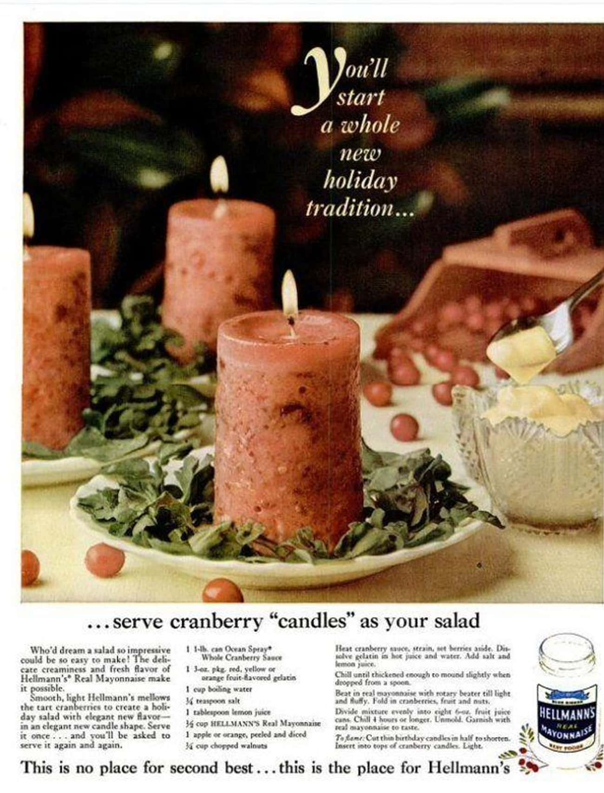

Cranberry 'Candle' Salad

Description:
Let's not mince words: this is a mold of cranberry sauce, mayonnaise, and Jell-O with a birthday candle sticking out of it.
It also looks disturbingly like roasted flesh, considering the ingredients.
Ingredients:
- 1 pound canned whole cranberry sauce
- 3 oz fruit-flavored gelatin, red, yellow or orange3 oz fruit-flavored gelatin, red, yellow or orange
- 1 cup boiling water
- ¼ tsp salt
- 1 tbsp lemon juice
- ½ cup mayonnaise
- 1 apple or orange, peeled and diced
- ¼ cup chopped walnuts
Steps:
- Heat cranberry sauce, strain, and set berries aside. Dissolve gelatin in hot juice and water. Add salt and lemon juice
- Chill until thickened enough to mound slightly when dropped from a spoon.
- Beat in mayonnaise with a rotary beater till light and fluffy. Fold in cranberries, fruit, and nuts.
- Divide mixture evenly into eight 6 oz fruit juice cans. Chill 4 hours or longer. Unmold, garnish with mayonnaise to taste.
- Cut birthday candles in half to shorten them. Insert candles into the tops of cranberry candles and light.